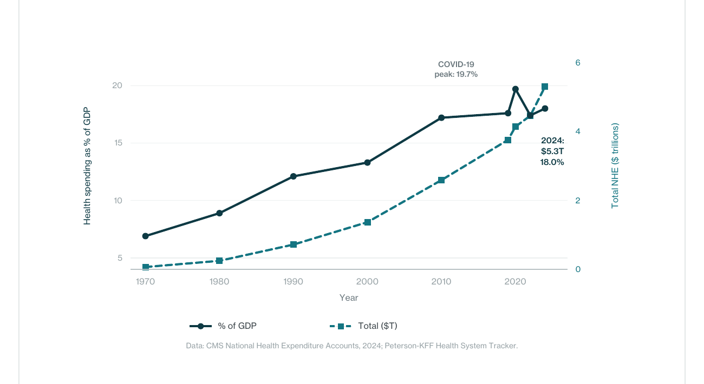
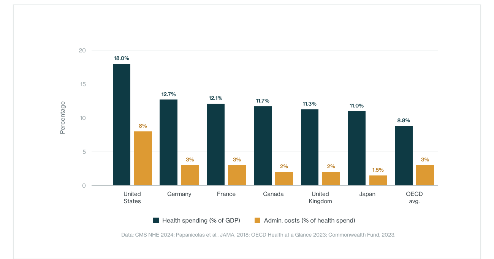
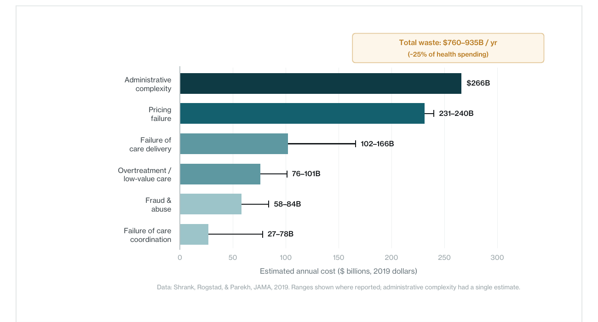
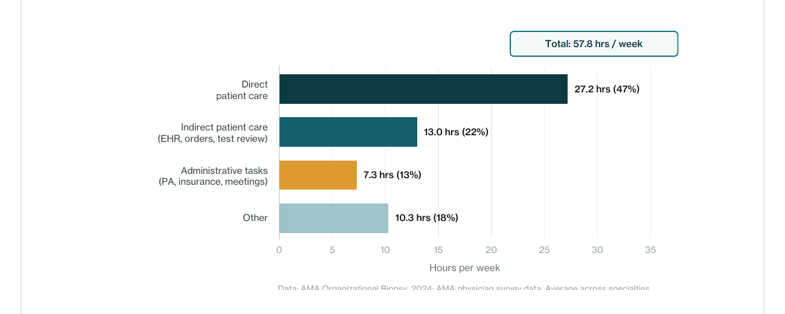
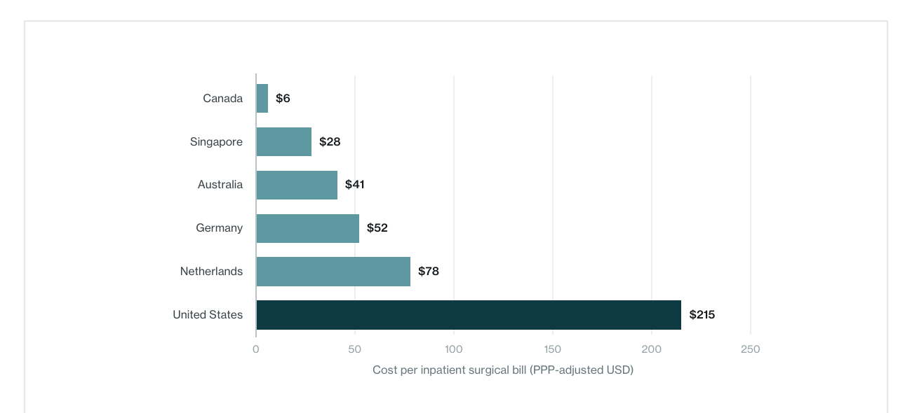
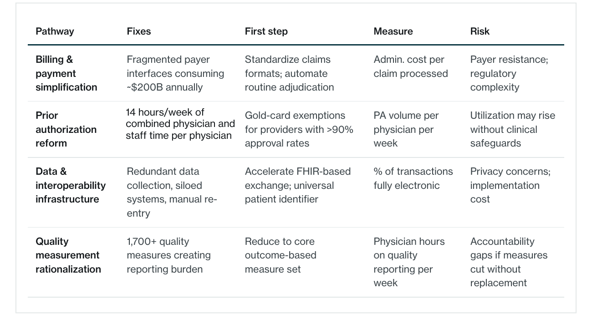

The United States healthcare system spent $5.3 trillion in 2024 – 18 percent of GDP, roughly twice comparable nations, and $15,474 per person. A substantial share of that spending is consumed by administrative complexity rather than patient care. This paper organizes the evidence around three findings.
Administrative overhead is the system’s largest category of waste. A 2019 JAMA review estimated total healthcare waste at $760–$935 billion annually, with administrative complexity at $266 billion – the single largest domain. McKinsey/Harvard identified over $250 billion in potential savings from simplification alone.
It absorbs clinician time and degrades care delivery. Physicians and staff spend approximately 14 hours per week on prior authorization alone. Less than half of physician work time reaches patients directly. These diversions slow treatment, drive burnout, and reduce the system’s capacity to convert spending into outcomes.
The problem is structural. U.S. administrative costs appear several times higher than peer systems on key comparative measures – driven not by clinical complexity but by fragmented payer interfaces, non-standardized billing, manual prior authorization, and 1,700+ quality measures.
The paper concludes with four structural pathways: billing simplification, prior authorization reform, interoperability infrastructure, and quality measurement rationalization.
01.The overhead is the system’s largest category of waste
A system that outspends its peers without outperforming them
U.S. healthcare spending reached $5.3 trillion in 2024 – $15,474 per person and 18 percent of GDP, up from 5 percent in 1960 and projected to reach 20.3 percent by 2033. Health spending has outpaced GDP growth in nearly every decade since systematic measurement began.

Papanicolas, Woskie, and Jha ( JAMA, 2018) found that the U.S. spends approximately twice as much per capita as comparable nations, with the gap driven not by greater utilization but by higher prices and – critically – administration. U.S. administrative costs accounted for 8 percent of total health expenditures, versus 1–3 percent in peer nations. The Commonwealth Fund’s 2022 comparison confirmed the U.S. ranks last among peers on outcomes despite leading on spending.

Where waste accumulates
Shrank, Rogstad, and Parekh ( JAMA, 2019) estimated total healthcare waste at $760–$935 billion annually – approximately 25 percent of spending. Administrative complexity was the largest domain at $265.6 billion. Pricing failure accounted for $231–$241 billion. Shrank et al. found no published studies evaluating interventions for administrative complexity – the largest category had attracted the least reform effort.
Berwick, in an accompanying JAMA editorial, observed that under current payment systems, many waste-reduction methods would reduce profit for the organizations that use them. Sahni, Carrus, and Cutler (McKinsey/Harvard, JAMA, 2021) estimated that simplification could save over $250 billion annually, with $175 billion achievable without new legislation.

02.The overhead absorbs clinician time and degrades care delivery
Less than half of physician time reaches patients
AMA data for 2024 show physicians reported a 57.8-hour average workweek: 27.2 hours on direct patient care (47 percent), 13 hours on indirect care, and 7.3 hours on administrative tasks. The Medscape Physician Compensation Report for 2023 estimated 15.5 hours per week on paperwork and administration.

The prior authorization burden
The AMA’s 2022 survey found that 88 percent of physicians reported prior authorization burden as “high or extremely high.” Practices completed an average of 45 PA requests per physician per week. Staff spent approximately 14 hours weekly on PA tasks. Ninety-four percent reported PA delayed necessary care; 33 percent reported a patient experiencing a serious adverse event.
KFF analysis of CMS data found Medicare Advantage insurers received over 50 million PA requests in 2023, denying 3.2 million. Among appealed denials, 81.7 percent were overturned – indicating a substantial share of the administrative burden produces denials that do not survive scrutiny.
The AAFP has described PA as the “bane of our existence,” noting that practices with approval rates exceeding 99 percent still hire multiple full-time employees solely to manage the process. This is not a marginal inefficiency. It is a structural diversion of clinical capacity.
03.The problem is structural, not incidental
Cross-national evidence
Richman, Kaplan, et al. ( Health Affairs, 2022) found that billing costs for a single inpatient surgical bill ranged from $6 in Canada to $215 in the United States. Himmelstein et al. documented that U.S. hospital administrative costs account for approximately 25 percent of total hospital expenditures – the highest among eight nations studied.

What drives accumulated administrative drag
This paper terms the condition accumulated administrative drag: the compounding effect of fragmented interfaces, non-standardized processes, and layered compliance that individually appear rational but collectively absorb capacity far beyond what comparable systems require.
Payer fragmentation. Providers interact with hundreds of distinct plans, each with different formularies, PA requirements, and claims formats. McKinsey identified approximately $200 billion in annual spending on financial transactions alone.
Misaligned incentives. As Kocher observed in JAMA (2021), complexity is profitable. Payers use PA and claims processes to manage costs; providers hire staff to navigate them; both invest in managing complexity rather than eliminating it.
Regulatory accumulation. CMS requires reporting on 1,700+ quality measures. Physicians spend the equivalent of nine patient visits per week on quality reporting. Each measure may serve a purpose; collectively, they constitute a burden that has grown faster than any review has rationalized it.
04.Pathways forward: a structural framework
Sahni et al. categorized simplification opportunities as “within” (individual organizations), “between” (interorganizational), and “seismic” (industry-wide). This paper adapts that taxonomy into four structural pathways, each following the same structure: what it fixes, what to do first, how to measure, what can go wrong.

Billing and payment simplification addresses fragmented payer interfaces (~$200B annually). First step: standardize claims formats; automate adjudication. Measure: admin cost per claim. Risk: payer resistance; regulatory complexity.
Prior authorization reform targets 14+ hrs/wk of clinician time diverted from care. First step: gold-card exemptions for high-approval-rate providers. Measure: PA volume per physician per week. Risk: utilization may rise without safeguards.
Data and interoperability infrastructure addresses redundant data collection and siloed systems. First step: FHIR-based exchange; universal patient identifier. Measure: percentage of transactions fully electronic. Risk: privacy concerns; implementation cost.
Quality measurement rationalization addresses 1,700+ measures creating reporting burden. First step: reduce to a core outcome-based set. Measure: physician hours on quality reporting. Risk: accountability gaps if measures are retired without replacement.
05.Conclusion
Across peer-reviewed research, government data, and professional surveys, the contours of the problem are consistent. The U.S. healthcare system carries administrative overhead that appears elevated relative to international benchmarks – not because American medicine is more complex, but because the architecture through which care is financed, authorized, documented, and measured has accumulated more friction than comparable systems.
Administrative complexity is the largest single category of healthcare waste – $266 billion annually by the most rigorous available estimate. It absorbs roughly two full days of clinician time per week in prior authorization alone. And it persists because the current architecture creates an equilibrium in which complexity is profitable for multiple parties, even as it degrades the system’s capacity to deliver care.
The pathways forward are structural: simplification, reform, interoperability, and rationalization. These are not new ideas. What has been absent is the willingness to treat them as design problems rather than policy debates. The U.S. healthcare system does not need to become simpler. It needs to become navigable. And every dollar recovered from administrative drag is a dollar that can be returned to the work the system exists to do: patient care.